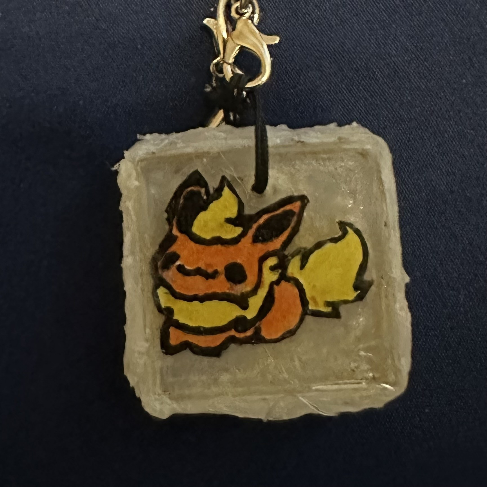
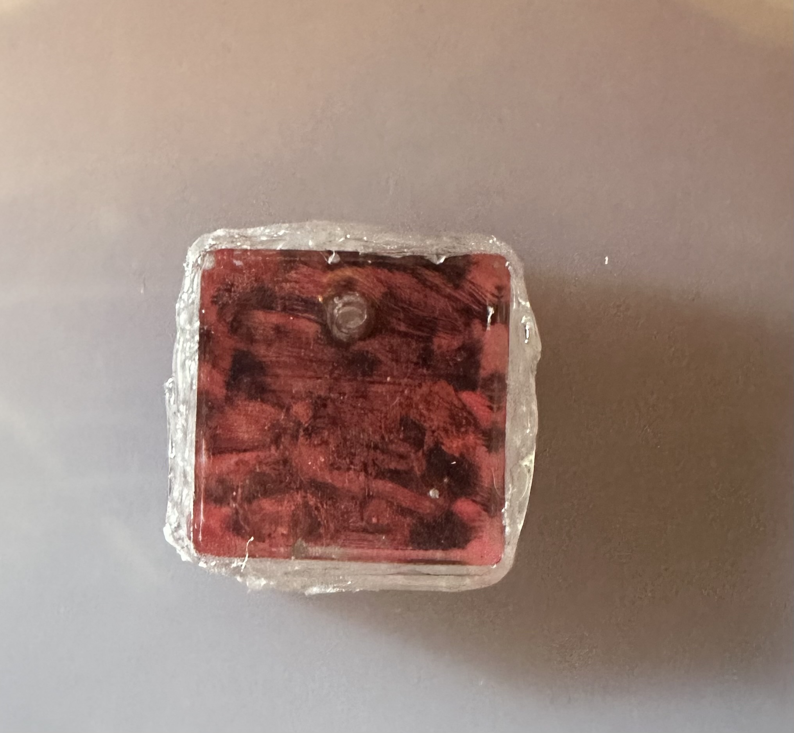
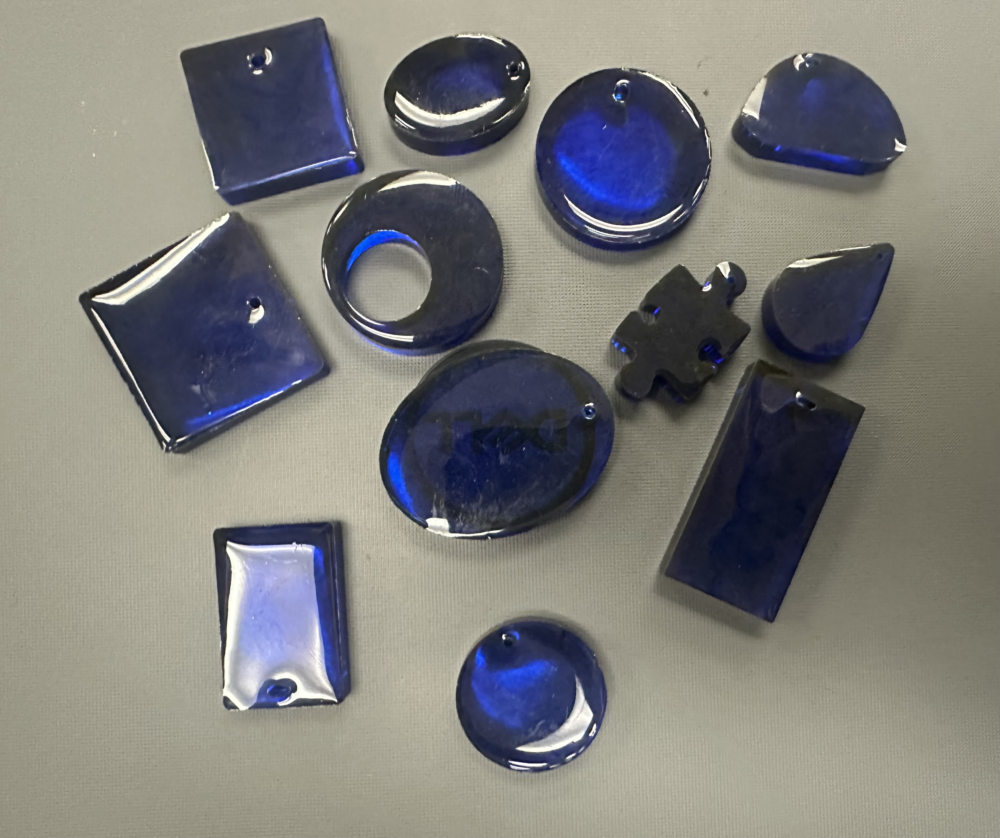
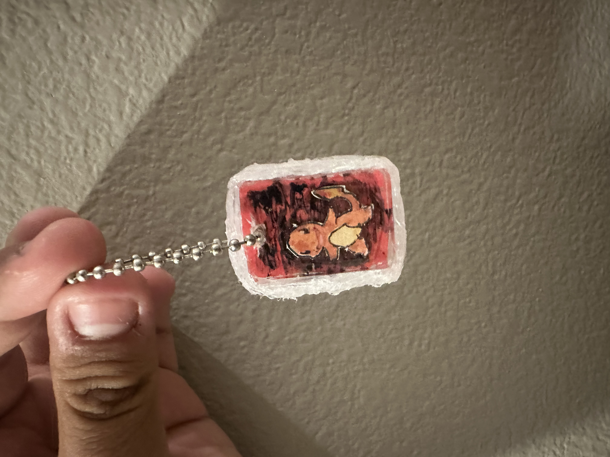
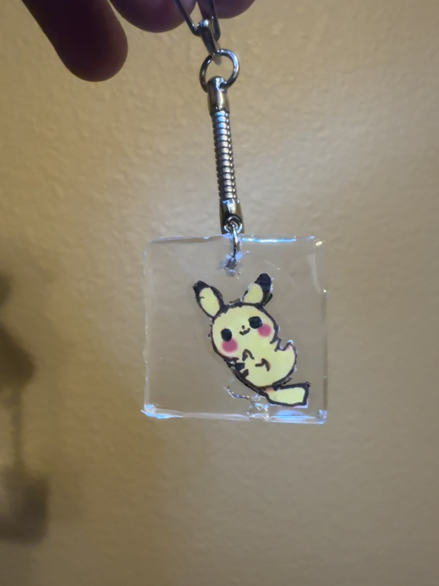
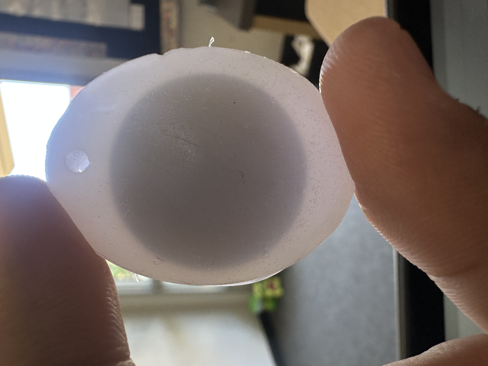

✨ Finished Charms

Here's a Flareon charm I made for myself, utilizing hot glue after a mika
powder background failed. still came out with a nice style!

This charm was a charm made durning free time,
now selling as a premade charm. This gives custom options
to premade charm buyers.

These are a batch of premades using blue ink!

While making my first order, i made this charmander one for
my brother after he wanted one. this is an example of making one with
just a premade charm and hot glue, saving a 3+ day charm into just 1.
this is recomended instead of the longer risky double layer process.

Heres a charm part of my first order, suprisingly also related to the game series, pokemon! Although the bubble at the bottom
as the only mistake, this is a fully double pour with just clear resin.
this also shows a keychain attachment, securily on there for eveyday use.

This charm was a fully hot glue charm, using an NFC (NTAG215) charm. This
was made as a premade to allow others to get a nfc charm without ordering a custom.

Empty Slot Ready For Another Photo!